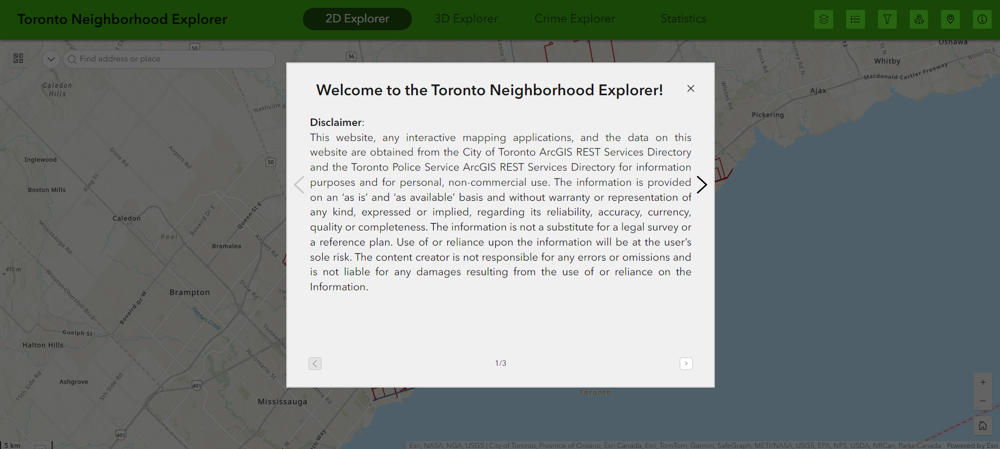
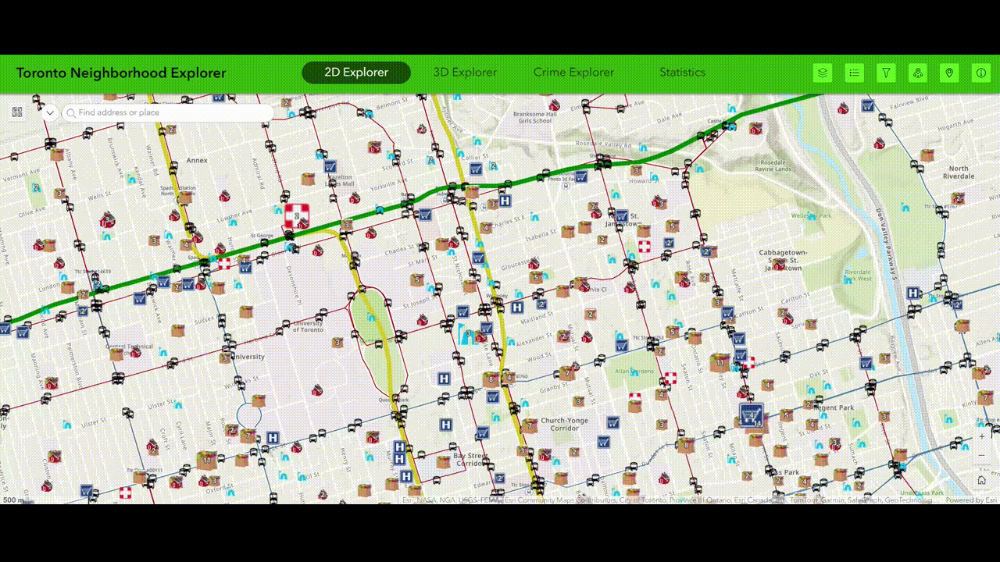
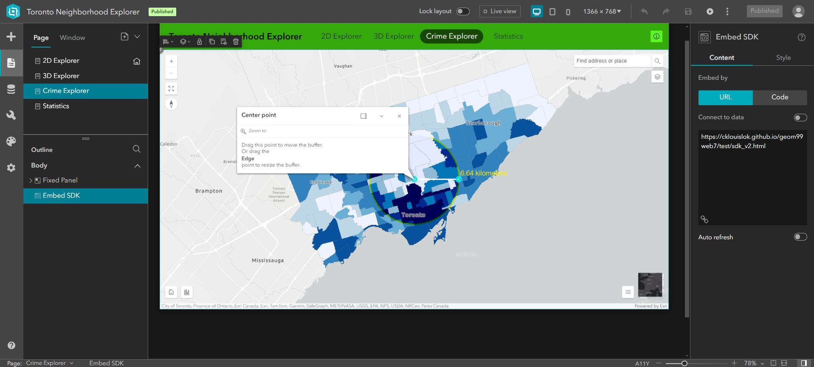
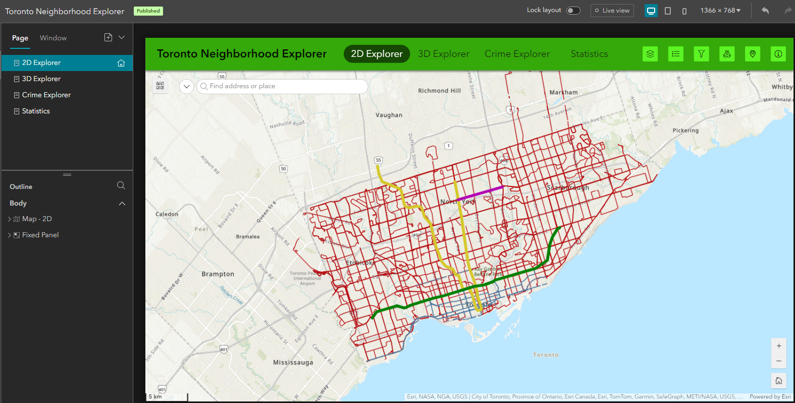
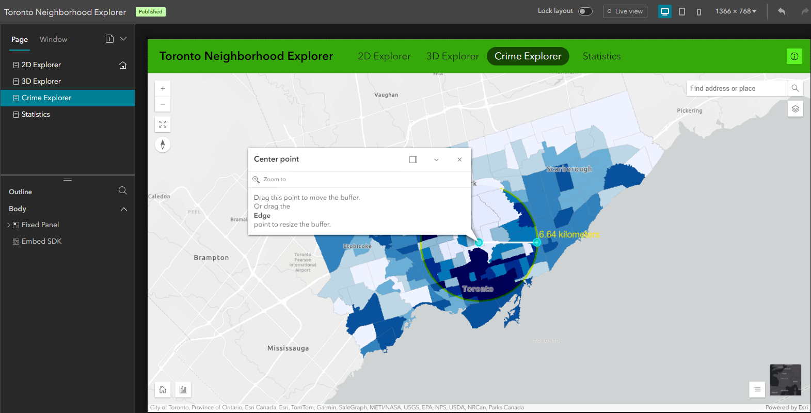
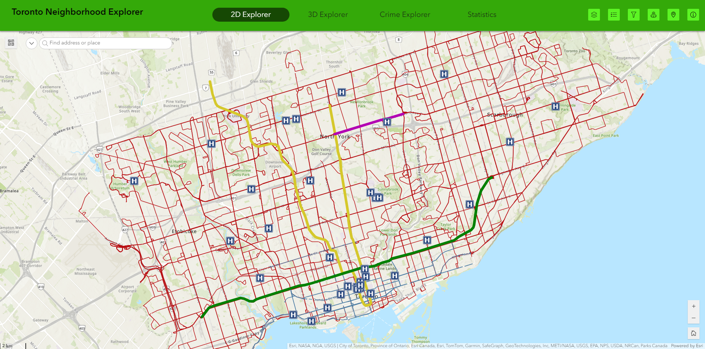
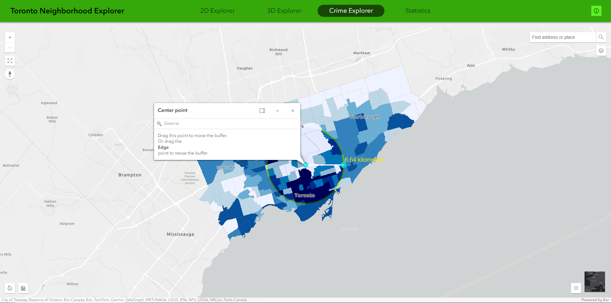

Link to Experience Builder solution
Interactive and Intuitive Visualization of Neighborhood Point, Line and Polygon Data
ArcGIS Experience Builder provides a user-friendly and interactive solution to strategically organizing multiple thematic maps into a single, easily accessible hub. The constantly evolving and wide variety of widgets available in Experience Builder empowers the integration and visualization of point, line, polygon, and 3D multipatch data in an interactive and harmonious manner, allowing users to explore an area through simple navigation of traditional 2D maps and closer-to-reality 3D scenes.
Featured function 1: Near Me widget - Locating nearby features and the closest feature from a location
The Near Me widget is the ideal solution to the shortcomings of ordinary online map applications - if we want to search for schools in an area, we type in school in the search bar, and the application will display the search results within your current map extent. However, this is not convenient enough for someone who wishes to explore the surrounding neighborhood when they are doing house-hunting.
Two tools, Around Me and Closest to Me, are configured in the 2D Explorer.
By setting the analysis type as proximity, the Near Me widget finds and analyzes all public amenities within a specified distance of a defined location.

By setting the analysis type as closest feature, the Near Me widget finds and analyzes the closest public amenities within a specified distance of a defined location.
Featured function 2: Synchronized 2D & 3D Visualization + 3D Analysis
In the 3D Explorer application, the 2D map and the 3D map operate in parallel - when the users zoom in, pan, or search for locations in one, the other map is triggered and zoomed to the same map extent. This provides users with greater flexibility in exploring both the planar position as well as the simulated stereoscopic environment of the location. This is useful to explore features that are only available in a three dimensional environment, such as building height, building density, skyline, etc.

The daylight and shadow cast effects in the 3D Toolbox are valuable tools to analyze the sunshine conditions in a location at different time of the day, in addition to on different days within a year. The line of sight tool also enables the exploration of unobstructed views from a location. These collectively allow users to look for a location with a desirable amount and angle of sunlight, and views.

The fly controller provides an immersive experience to visualize the 3D surrounding environment around a point location or along a path.

Featured function 3: Embedding external resources
The Embed widget opens the door for additional custom functionalities via a URL or code. The highly configurable structure of Experience Builder on the one hand facilitates a swift web development with customizable tools, but on the other hand limits the functionalities and possibilities of ordinary application development through coding. With the Embed widget, developers can develop web pages and other applications on other platforms, and embed the relevant URL or simple code into the web experience. In a traditional web development environment, the embedment is achieved by iframe. In Experience Builder, it only costs several clicks.
In the final product, the content in the Crime Explorer and Statistics pages are developed using ArcGIS Maps SDK for JavaScript and ArcGIS Dashboard respectively, and they are embedded into the web experience.
Bugs? Purposeful design?
Near Me widget not working as expected when features are out of reach
- When the point location with the defined search radius does not intersect with the features, all features are displayed on map, implying that it fails to find the nearby or closest features, even though the result says "No results found".
- It is expected that no features will be shown on map.
Fly Controller widget
- Cannot be triggered by location search, and the users have to manually select the point feature to fly around or the line feature to fly along.
- Flights do not stop automatically when it finish a path.
- Cannot control the zoom level when flying along a path. Attempting to zoom in/out during flight will terminate the flight.

What we like
Near-codeless web development with the possibility for additional custom functionality
- Very intuitive graphic interface to design a web experience achieved by drag-and-drop elements
- Actions can be set on a widget to trigger another widget.
- Does not require any programming knowledge at all.
- Embed widget for additional custom functionality by embedding URL or code.
What we think can be improved
Configurable widgets, but with very few options
- Some widgets cannot be triggered by other widgets. For instance, the Fly Controller.
- Options for widget general settings and font styles are very limited.
Capable of performing spatial analysis, only if we pay
- Analysis and Business Analyst widgets enable spatial analyses and generate infographics.
- But consume credits.
The lone ranger
- Collaboration is not an option, only the owner can edit the web experience.
- The non-owner users can only view a shared web experience.
Codeless = Difficult to debug
- The graphical interface with drag-and-drop elements lowers the threshold of application and web development.
- But debugging may not be achieved in the traditional way - by looking at the source codes.
- What we think the results will look like based on the design view are not always the actual results.
- Could be time-consuming to fix these tiny bugs.
2D Explorer and Crime Explorer in design view
 2D Explorer and Crime Explorer in published version - unexpected change in the top, green bar
 Missteps made
Reliance on dynamic online data
- All data used are solely obtained from the ArcGIS REST Services Directories of the City of Toronto and the Toronto Police Service, which are constantly updated.
- Access to the hosted feature layers on these servers is not stable and layers may become inaccessible from time to time.
- Solution: duplicate all feature layers in AGOL of our organization for stability, at the expense of recurrent updates from the data owners
Triggering more than one Near Me widget concurrently
- Displaying more than one Near Me widget results would reduce the readability of the map.
Tips and Tricks
Perform symbolization and other cartographic settings in AGOL
- Cartographic settings inclusive of layer symbology settings are minimal in Experience Builder.
- The best way is to import all data into a web map and scene on AGOL, and then import the symbolized web maps and scenes into the web experience using the Map widget.
3D rendering
- Computers/Devices managed by an organization may have some functions regarding graphic display and hardware acceleration disabled by the IT department. When attempting to load the 3D maps with Google Chrome and Microsoft Edge, the browsers would not render the 3D maps because they follow the settings of the computers where 3D rendering is disabled.
- Use Mozilla Firefox. It uses internal settings rather than the system settings of the computers, and hence 3D rendering is not disabled.
Read documentation and tutorials to know the widgets
- Official resources and documentation provide detailed information and tutorials on how to build a web experience and how to configure the widgets.
- Also a dedicated page explaining what actions can be added to widgets, and what widgets can by triggered be other widgets. Understanding the widget usage and limitations before building an experience could save you from the frustration of not finding the button to connect a widget to another.